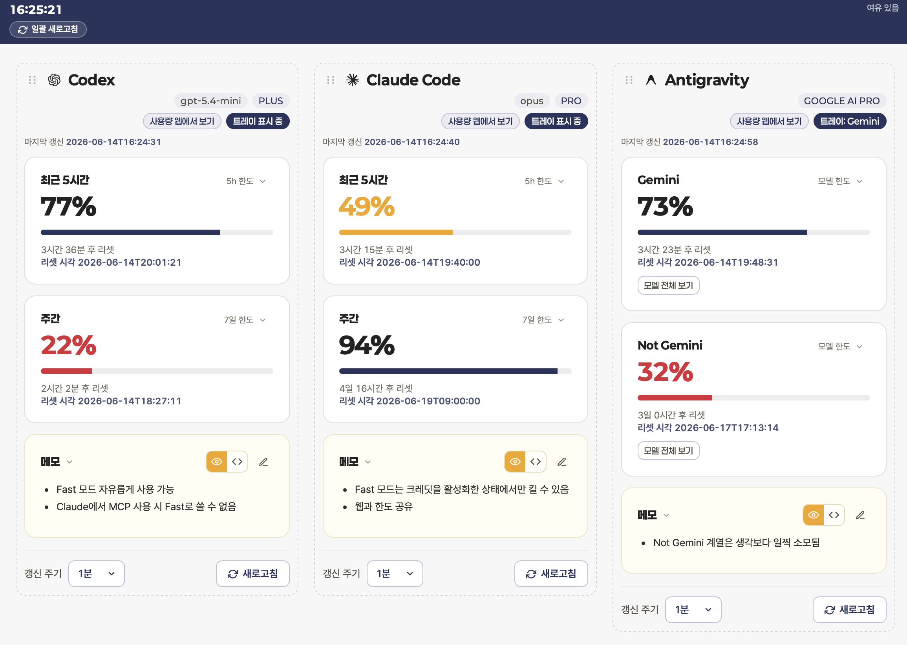

Claude Code
5시간 한도와 주간 한도를 카드로 분리해 표시합니다.

자주 쓰는 AI 개발 도구의 남은 한도를 같은 화면에서 비교합니다.
5시간 한도와 주간 한도를 카드로 분리해 표시합니다.
5시간 세션과 주간 스냅샷을 읽어 남은 비율을 보여줍니다.
Gemini와 Not-Gemini 그룹, 추천 모델 칩, 요금제 정보를 함께 표시합니다.
백그라운드에 상주하며 필요한 정보만 빠르게 확인하도록 구성했습니다.
GitHub Releases에서 universal `.dmg`를 받아 Intel과 Apple Silicon Mac에 설치할 수 있습니다. 현재 ad-hoc 서명 빌드이므로 첫 실행은 Finder에서 우클릭 후 열기로 Gatekeeper를 한 번 허용하세요.